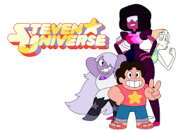
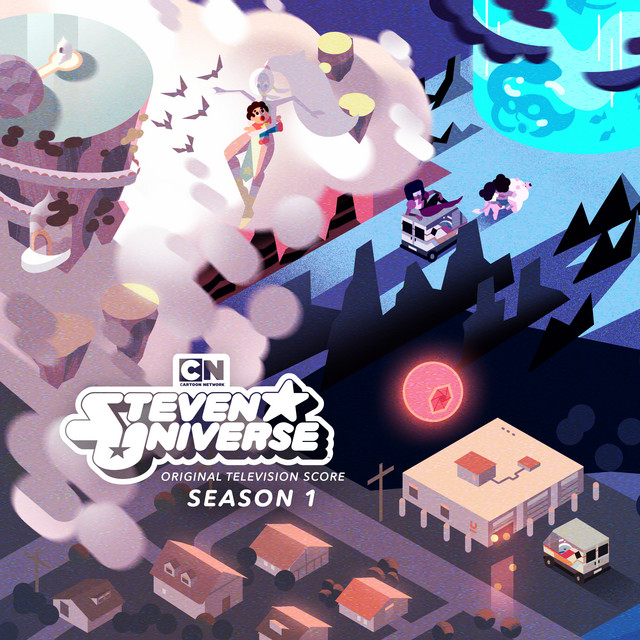
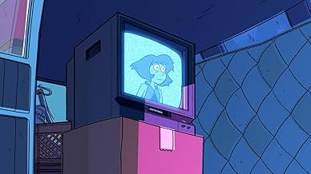
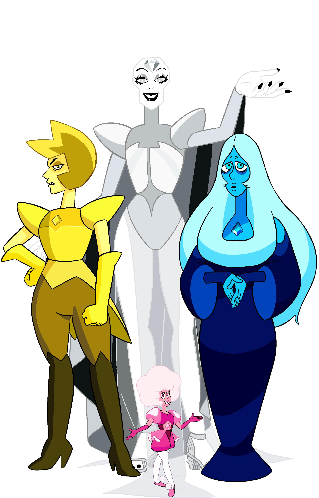
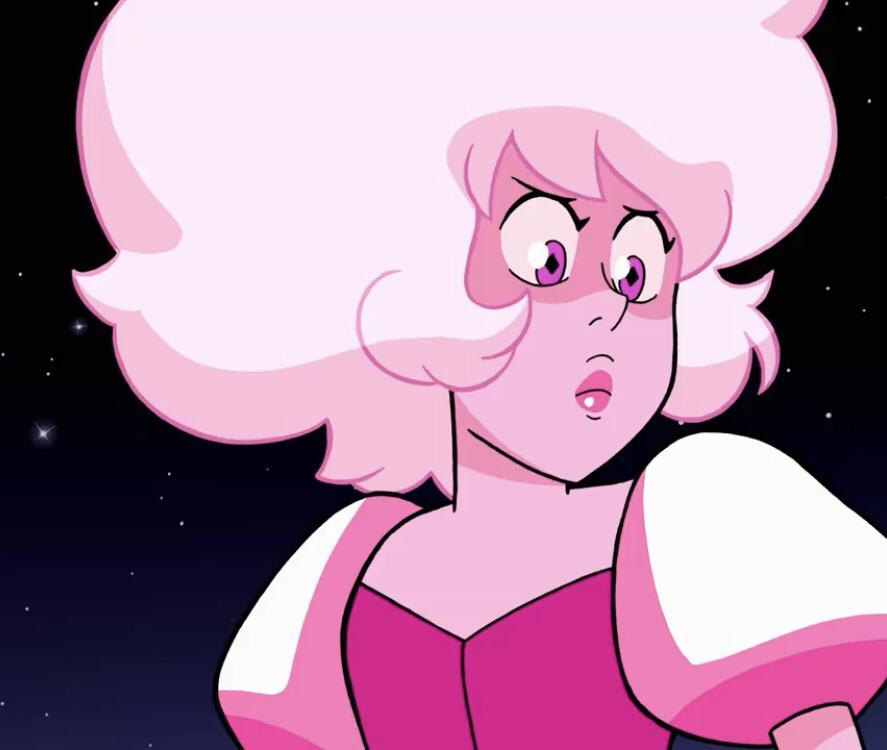
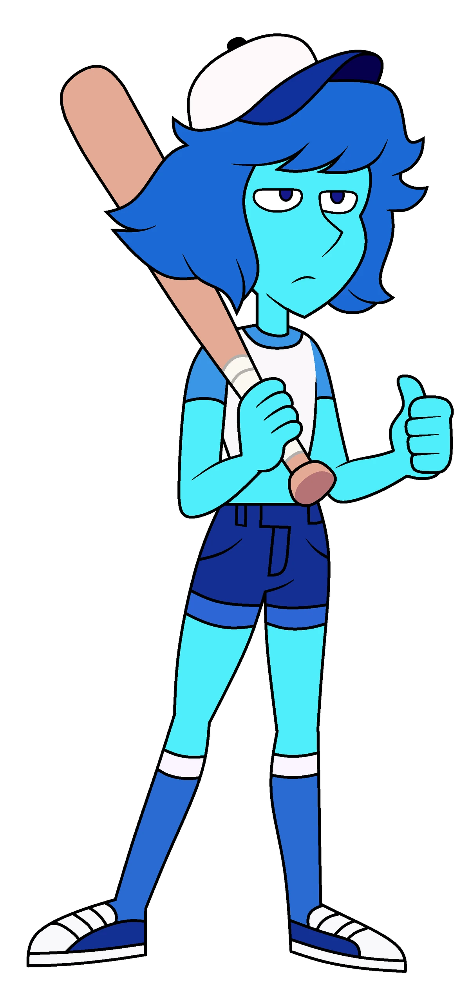

O quão fã de Steven Universo você é?

Começar
Questão 1 de 10
Quem é o protagonista?
Questão 2 de 10
Quantos episódios tem a primeira temporada?

Questão 3 de 10
Por que Lápis-lazuli mandou uma mensagem para as Crystal Gems?

Questão 4 de 10
Em qual temporada tivemos a primeira aparição da Diamante Amarelo?
Questão 5 de 10
Quem era a gem mais traumatizada da série?
Questão 6 de 10
Qual diamante Garnet mais tinha medo?

Questão 7 de 10
Qual episódio Lápis conta sobre seu passado?
Questão 8 de 10
Por que Steven não perdoou as diamantes?
Questão 9 de 10
Diamante Rosa era uma vilã ou não?

Questão 10 de 10
Que dia Steven faz aniversário?
Fim do Quiz 🎉

Espero que tenha gostado, continue assistindo o desenho eu recomendo!
Recomeçar